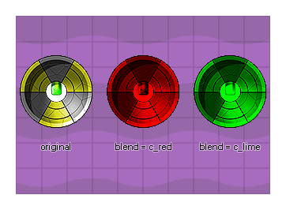

image_blend
Returns: Real
This variable controls the "tinting" of the instance sprite and
the default value is -1 (but can also be c_white). Any
other value (including internal colour constants like c_red, or
c_aqua) will blend the specified colour with the original sprite.
Please note that for changes in this variable to be visible, the
instance should have either no draw event (and so
GameMaker: Studio will default draw the sprite) or be drawn
using one of the extended drawing functions like
draw_self() or
draw_sprite_ext().

Please note that you should try to limit blending on the HTML5
platform (unless using WebGL), as each blended sprite has to be
cached separately and so having many blended sprites may adversely
affect performance (you can also set the cache size using the
function sprite_set_cache_size).
image_blend = make_colour_hsv(255, 255, random(255));
The above code will set the image_blend of the sprite defined for the instance to a random colour.